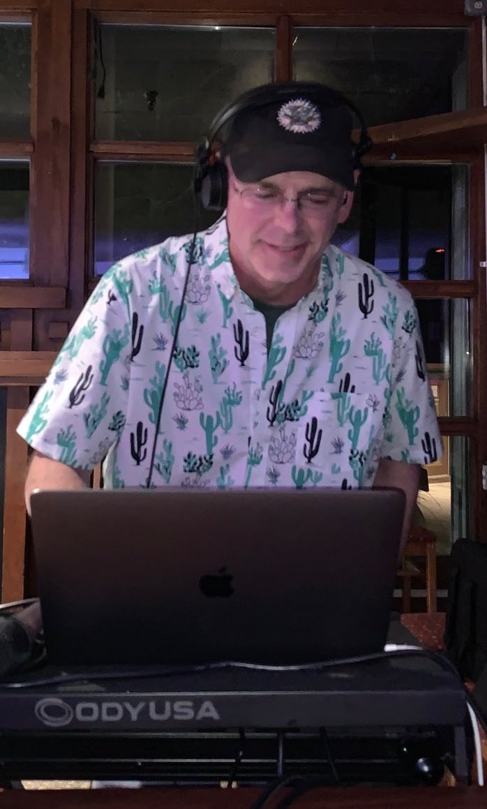

About
Woodworker Cactus Blue
Cactus Blue caught the woodworking bug when he was in 8th grade and had an excellent woodshop teacher. He has tried his hand in several projects and has tried to capture them in photos as the years have passed.
His most recent interest is turning pens and pencils and other small items. He learns as he goes and finds that being out in the woodshop is almost as good as a round of golf.
DJ Cactus Blue
DJ Cactus Blue is a beginner DJ that continues to learn from others via Youtube, Mixcloud, etc. He currently considers himself as a home DJ and has given performances at educator conferences.
He looks to make this a hobby since retiring from education and possibly play some gigs. Music has always been an interest and he has always enjoyed listening to all types of music. He even fiddled with mixing back in college by recording to cassette tapes. Please follow his journey and enjoy the music!